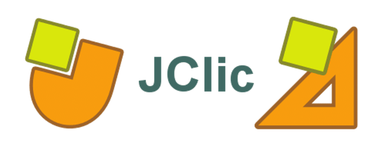

JClic es una aplicación de software libre desarrollado en Java para la creación de actividades educativas multimedia, entre ellas Objetos de Aprendizaje, contiene un conjunto de aplicaciones informáticas que sirven para realizar diversos tipos de actividades educativas: rompecabezas, asociaciones, ejercicios de texto, palabras cruzadas, crucigramas, sopas de letras, entre otras.
JClic funciona en diversos sistemas operativos: Linux, Mac OS X, Windows y Solaris.
Aplicaciones de JClic:
JClic Player: Ésta aplicación contiene:
- Applet: Permite crear actividades como "applet" para agregar a una página web.
- Aplicación JClic: Permite realizar las actividades sin que sea necesario estar conectado al sitio oficial de JClic.
JClic Author: Es una herramienta autor que permite crear, editar y publicar actividades en la web de una manera intuitiva.
JClic Reports: Éste módulo permite recopilar los datos de una actividad (tiempo empleado en cada actividad, número de intentos y aciertos, entre otros) y presentarlos después en informes estadísticos de diversos tipos [4].
A continuación se muestra un videotutorial de la herramienta: